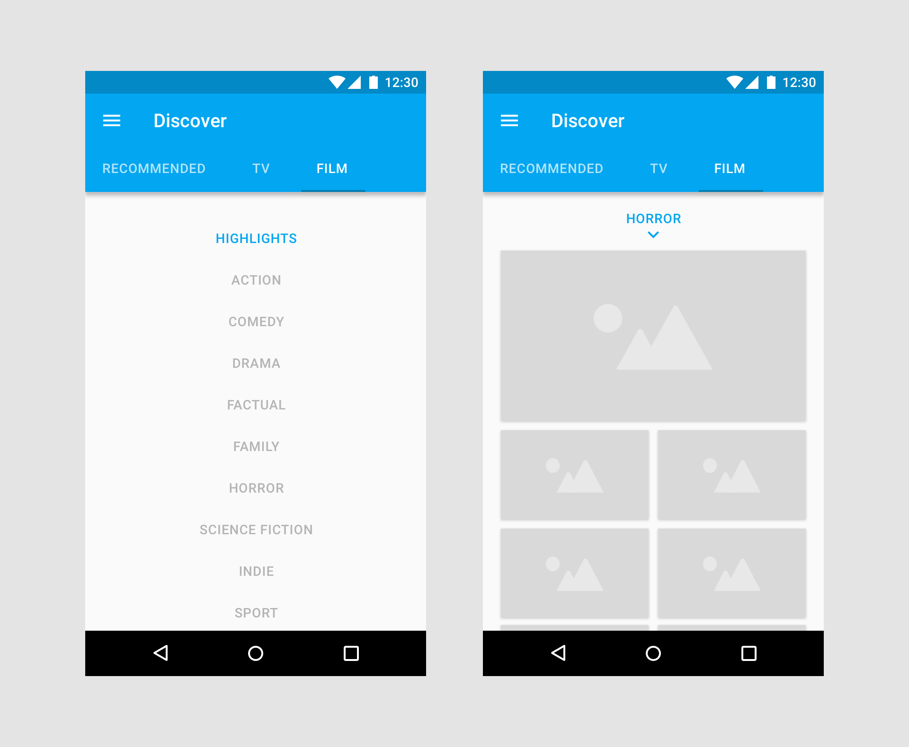
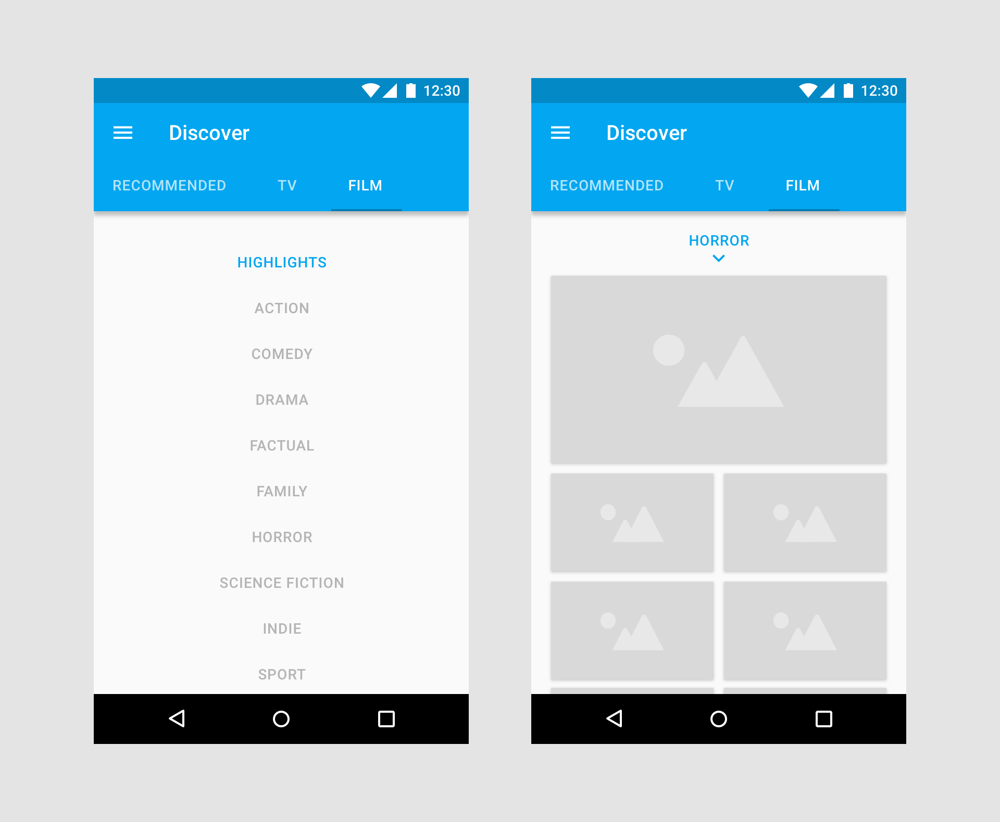
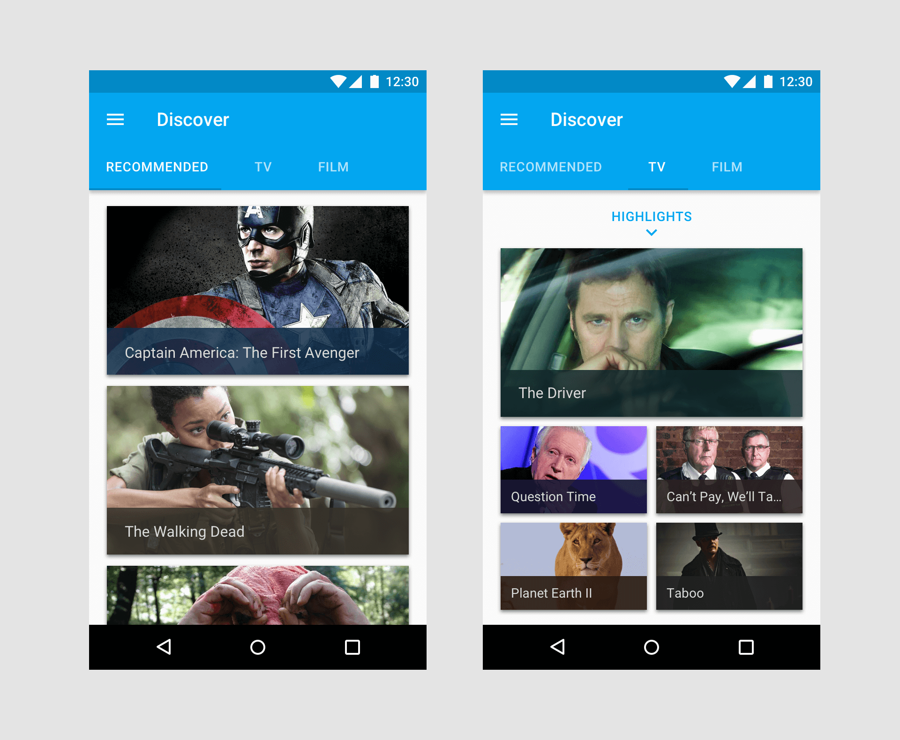
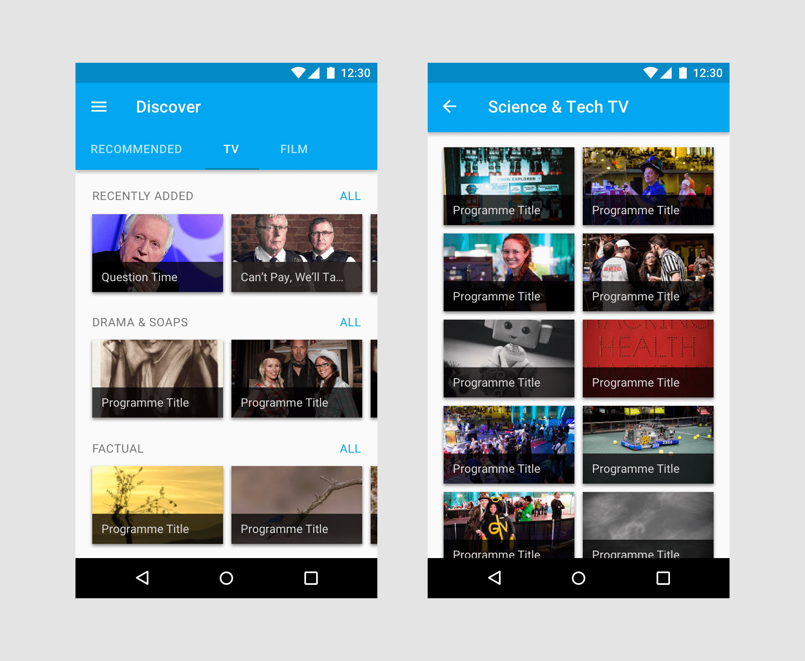
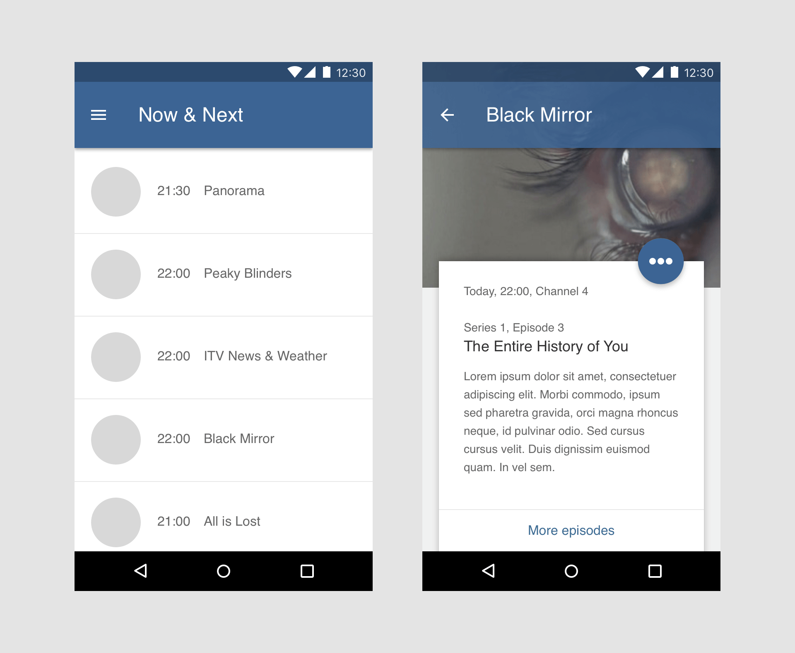
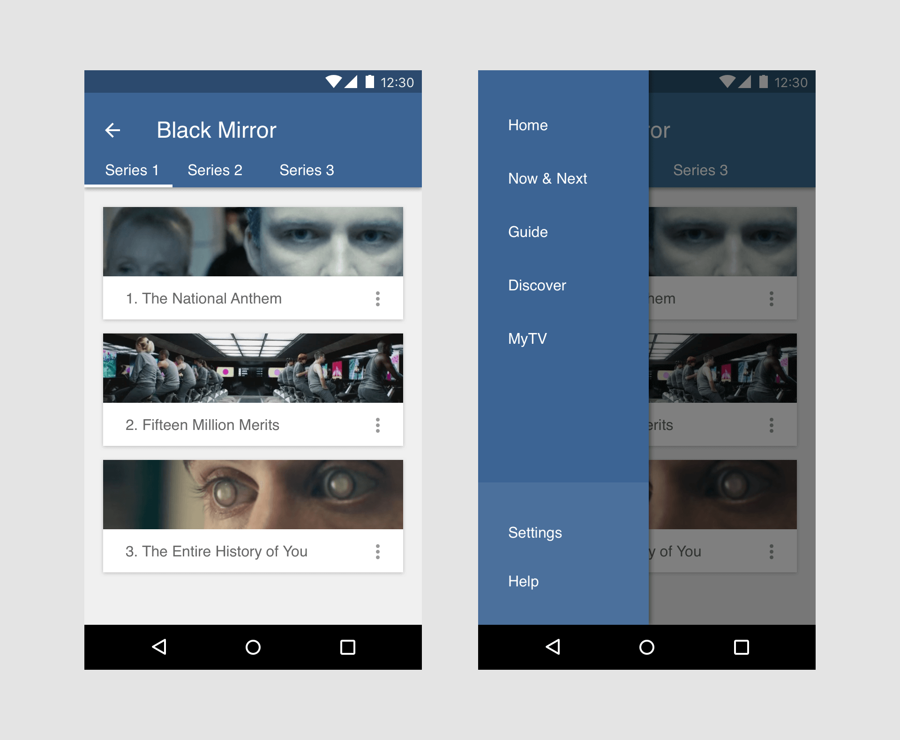

YouView Mobile
The current YouView mobile app allows users to engage with a limited set of features. The goal for this project was to redesign the app with full set top box feature parity in mind, allowing users to easily browse the catalogue of content available with more ease than can often be found via a TV remote control.
Framer prototype
Rough iOS prototype created using Framer. This was used to demonstrate how content may be differentiated using alternate colour schemes.
Android IA concepts
Android wireframes exploring simple navigation patterns for the mobile discover feature.
 

Android IA concepts
Rough examples for how content may be presented on Android devices. Of particular interest was how well horizontal and vertical scrolling might work together within the same app.
 UI navigation concepts
Further explorations for how different features of the app might be handled. For example, navigating from the TV guide into programme information, more episodes or side menus.
 